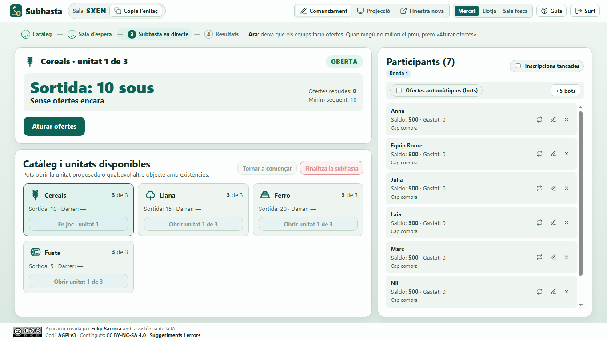
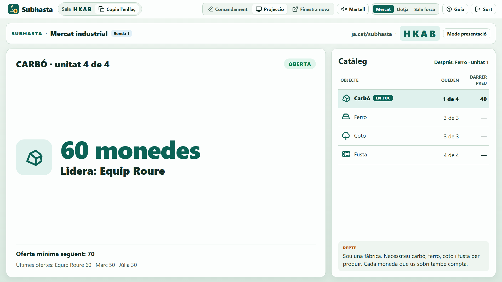
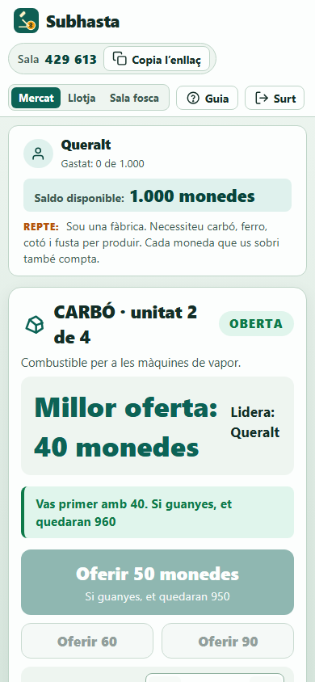
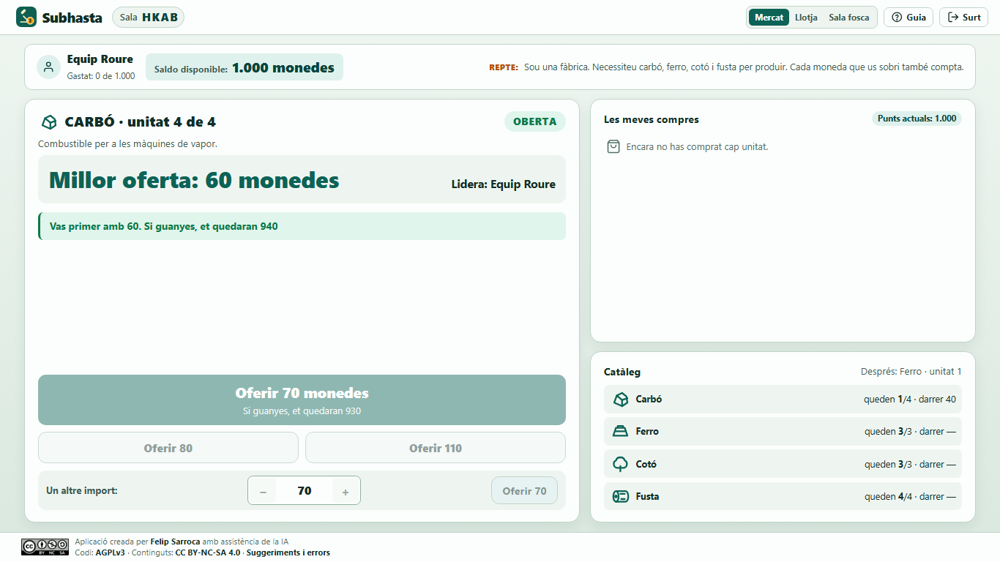
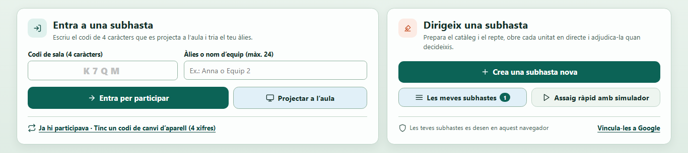
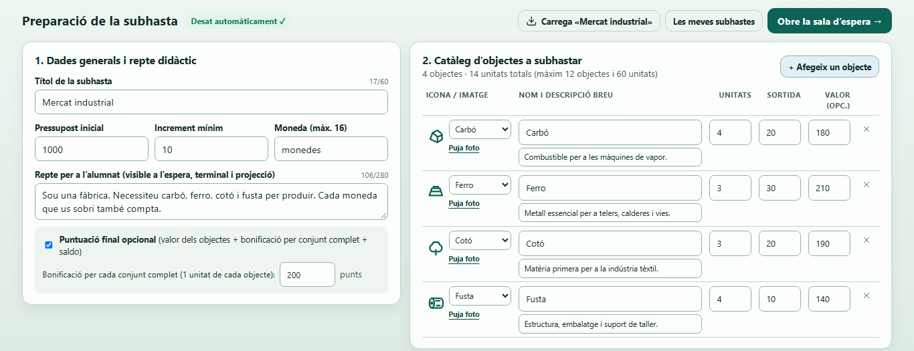
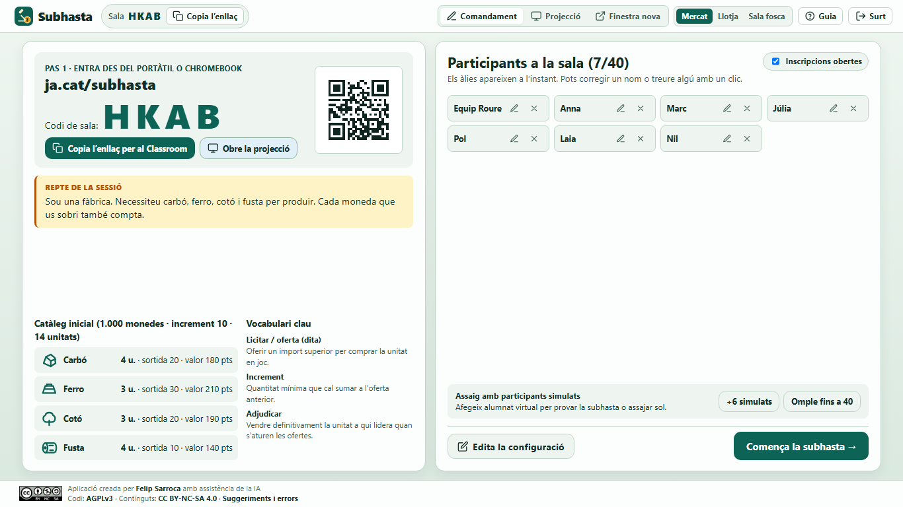
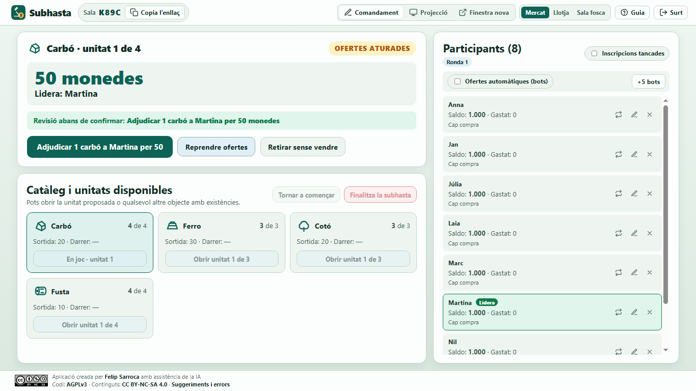
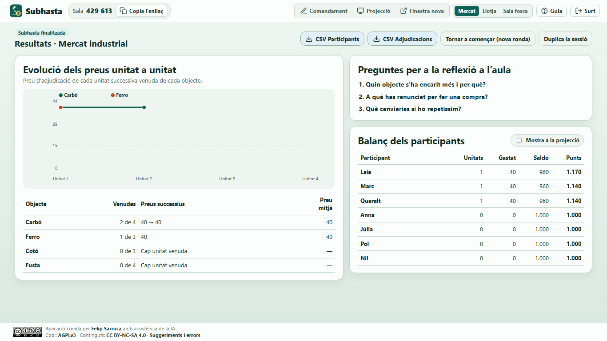

Comandament

Obres cada unitat, atures les ofertes i adjudiques. Veus el saldo i les compres de tothom.
No cal cap compte ni instal·lar res. Prepares què se subhasta, l’alumnat entra des del portàtil amb un codi de 4 caràcters i tu adjudiques cada unitat en directe davant de tota la classe.


Una mateixa subhasta es veu de tres maneres. Totes s’actualitzen a l’instant, encara que siguin en ordinadors diferents.

Obres cada unitat, atures les ofertes i adjudiques. Veus el saldo i les compres de tothom.
Es veu a la pissarra digital: què se subhasta, l’oferta més alta i qui va al davant.

Cada equip, des del seu portàtil o Chromebook, fa ofertes i veu el seu saldo i les seves compres.
Un ordinador connectat al projector. Si vols, un segon aparell per dirigir des de la taula mentre l’ordinador de l’aula projecta.
Un portàtil o Chromebook per equip de 2 o 3 persones, amb connexió a internet. Entren a ja.cat/subhasta; no cal cap compte.
Uns 30–40 minuts de classe: 5 per entrar, 15–25 de subhasta i 10 per comentar el gràfic de preus. La preparació la pots fer abans.
Obre ja.cat/subhasta. La portada té dues bandes: l’esquerra és per a l’alumnat i la dreta, per a qui organitza.

1 2 3 4 5 6Primer cop? Prova l’Assaig ràpid amb simulador abans de fer-ho amb l’alumnat: veuràs com pugen les ofertes, com s’adjudica i com queden els resultats, sense que hi hagi ningú connectat.
A l’esquerra hi ha les dades generals; a la dreta, la llista d’objectes. Tot es desa automàticament i ho pots modificar fins que premis «Comença la subhasta».

1 2 3 4 5 6 7 8 9 10 11 12 13 14 15Cada fila del catàleg és un objecte. Fixa’t en aquest exemple: es subhastaran 4 unitats de carbó, d’una en una, i la primera oferta de cada unitat haurà de ser, com a mínim, de 20 monedes.
Amb 4 unitats de carbó hi haurà quatre licitacions seguides. Cada unitat la guanya un equip, i el preu pot pujar o baixar segons quants equips encara en vulguin i quants diners els quedin. Això és el que mostra el gràfic final.
La clau és l’escassetat: si n’hi ha per a tothom, ningú no competeix. Posa menys unitats de cada objecte que equips, i un total d’entre 12 i 20 unitats perquè la subhasta duri uns 20 minuts.
| Grup | Objectes | Unitats per objecte | Total |
|---|---|---|---|
| 5–6 equips | 3 | 3–4 | 9–12 |
| 7–9 equips | 4 | 3–4 | 12–16 |
| 10–14 equips | 4 | 4–5 | 16–20 |
Pensa els imports en relació amb el pressupost. Amb 1.000 monedes per equip, funciona bé:
| Camp | Exemple | Per què |
|---|---|---|
| Pressupost | 1.000 | Fàcil de calcular mentalment. |
| Increment | 10 | Un 1 %: les ofertes pugen a bon ritme. |
| Sortida | 10–30 | Un 1–3 %: tothom pot començar a licitar. |
Les ofertes sempre són múltiples de l’increment a partir del preu de sortida (20, 30, 40…). Un increment massa petit allarga la subhasta; un de massa gran fa que tothom arribi de seguida al límit.
Si marques «Puntuació final», el balanç de cada equip és: valor dels objectes comprats + bonificació per cada conjunt complet + monedes que li sobren. Un conjunt complet és tenir una unitat de cada objecte del catàleg. Així l’alumnat ha de decidir entre gastar o estalviar.
| Exemple: un equip compra… | Valor | Sobra | Conjunts | Punts |
|---|---|---|---|---|
| 2 carbons per 60 i 40 monedes | 180 + 180 | 900 | 0 | 1.260 |
| 1 carbó, 1 ferro, 1 cotó i 1 fusta per 280 monedes | 720 | 720 | 1 × 200 | 1.640 |
| No compra res | 0 | 1.000 | 0 | 1.000 |
Si no omples cap valor ni bonificació, la puntuació no apareix enlloc.
Si un camp no és vàlid (un nom repetit, unes unitats a zero, una sortida més gran que el pressupost…), queda marcat en vermell amb l’explicació i no podràs obrir la sala d’espera fins que el corregeixis.
La sala d’espera dona el codi de 4 caràcters. Projecta-la perquè els equips entrin mentre llegeixen el repte.

1 2 3 4 5 6 7 8 9 10 11El codi no fa servir caràcters que es confonen (ni 0 i O, ni 1, I i L). Si un equip tanca el portàtil per error, només ha de tornar a entrar amb el mateix navegador: recupera la mateixa cartera.
La projecció és una pantalla pública de només lectura: ningú no hi pot fer res. Hi ha dues maneres de muntar-la.
Si només tens una pantalla (sense ampliar-la), obre la projecció i prem Mode presentació: hi apareix una barra per dirigir-la des d’allà mateix.
Tu marques el ritme. No hi ha cap temporitzador: una unitat es ven quan tu decideixes aturar les ofertes i adjudicar-la.

1 2 3 4 5| Norma | Què passa |
|---|---|
| Ningú no pot oferir més del que té | Els botons d’imports massa alts es desactiven. |
| Qui va primer no es pot superar a si mateix | Ha d’esperar que algú altre l’avanci. |
| Una oferta no es pot retirar | Quan s’ha fet, compromet aquell import fins que algú la superi. |
| El saldo només baixa en adjudicar | Mentre licita, l’equip no perd res: només paga qui guanya cada unitat. |
| Dues ofertes alhora | Només una entra; l’altre equip rep «Algú ha ofert abans» amb el nou mínim. |
Dona-li ritme de subhasta. Canta en veu alta: «60 monedes per a l’Equip Roure… a la una… a les dues…» i prem «Aturar ofertes». Fes servir la primera unitat com a ronda d’assaig i, després, «Tornar a començar» perquè la subhasta real comenci amb tothom amb el pressupost sencer.
Prem Desfés l’última adjudicació. Es pot fer mentre no hagis obert la unitat següent: torna els diners i la unitat.
A la seva fila, prem la icona de les dues fletxes. Surt un codi de 4 xifres vàlid 5 minuts. A l’ordinador nou, l’equip escriu el codi de la sala, obre «Tinc un codi de canvi d’aparell» i el codi. La cartera hi passa sencera.
Prem el llapis per canviar-lo o la × per treure l’equip. No es pot treure qui lidera la unitat en joc.
Prem «Finalitza la subhasta» quan no hi hagi cap unitat oberta. És definitiu: totes les pantalles passen als resultats.

1 2 3 4 5 6 7 8Idees per al debat: per què l’últim carbó es va pagar més car que el primer (o més barat)? Quins equips van gastar massa al principi i després no van poder comprar? Quin objecte era més escàs? Què faríeu diferent si ho repetíssim?
Cada subhasta pertany a qui l’ha creada. Ningú més la pot dirigir ni modificar.
Les trobaràs a Les meves subhastes de la portada, sempre que facis servir el mateix ordinador i navegador.
A la portada, prem Vincula-les a Google i tria el teu compte. Després, entra amb aquest compte des de l’altre ordinador.
Una subhasta s’esborra sola 30 dies després de finalitzar-la o de l’última acció. No es demana cap dada personal a l’alumnat.
Comprova que el codi sigui el de la pantalla i que les inscripcions estiguin obertes (la casella de la sala d’espera o del comandament).
Si l’àlies ja l’ha triat un altre equip, n’ha de triar un de diferent. La sala admet fins a 40 participants.
No. Pots editar-lo a la preparació i a la sala d’espera fins que premis «Comença la subhasta». Si cal canviar-lo després, duplica la sessió i fes-ne una de nova.
Res no es perd. Sense l’organitzador no s’adjudica cap unitat; quan tornis a tenir connexió, recarrega la pàgina i continua. Si un equip perd la connexió, no pot fer ofertes fins que la recupera.
No. Tu decideixes quan s’aturen les ofertes. Així pots allargar el moment de tensió o accelerar-lo segons la classe.
Sí: «Assaig ràpid amb simulador» a la portada, o «+6 simulats» a la sala d’espera. Al comandament, «Ofertes automàtiques (bots)» fa que els participants simulats licitin sols.
Sí, amb «Puja foto» a cada objecte. La foto es redueix automàticament al navegador. Fes servir imatges senzilles i amb drets d’ús.
«Tornar a començar» manté la mateixa sala, el mateix codi i els mateixos equips, i torna el pressupost inicial a tothom per fer una ronda nova. «Duplica la sessió» crea una subhasta nova amb el mateix catàleg i un codi nou, per a un altre grup.
Prova-ho primer amb l’assaig ràpid: en dos minuts ho tindràs tot clar.